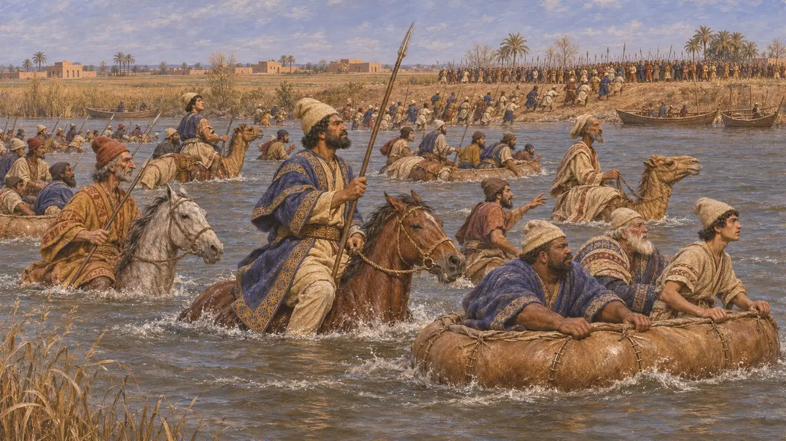
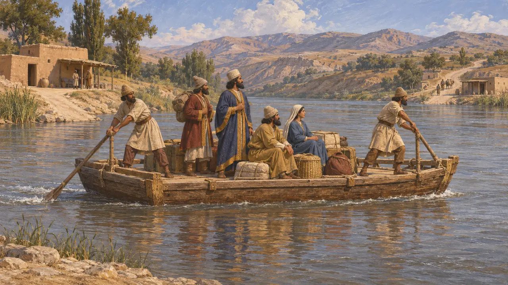
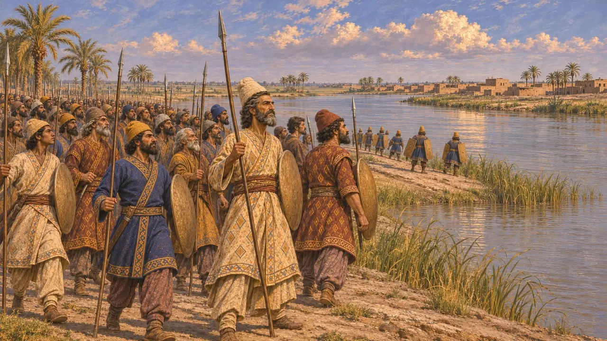

底格里斯河
美索不达米亚的东部河流,公元前522年大流士在此击败尼丁图-贝勒
底格里斯河是美索不达米亚两条大河中偏东的一条,自亚美尼亚流出,经尼尼微和奥皮斯入海。公元前522年12月,尼丁图-贝勒的巴比伦人乘船据守河岸抵挡大流士,大流士渡河并击败了他们。御道从萨第斯通往苏萨的途中也要渡过此河。
游戏中： 底格里斯河见于巴加斯塔纳关卡的编年史、闲谈和叛军的战场,是大流士击败第一位伪尼布甲尼撒的那条河。

河畔之战
见于史载大流士说，尼丁图-贝勒的军队据守底格里斯河，并在那里备有船只。他让军队乘坐皮囊筏、骆驼和马匹渡河，并于公元前522年12月的阿特里亚迪亚月26日获胜。数日后，他在幼发拉底河畔的扎扎那再次获胜，并夺取了巴比伦。
Behistun inscription §18-20

御道上的一条河
古代记述希罗多德说，从萨第斯通往苏萨的御道在马提埃尼人的土地上要渡过四条可通航的河流，第一条便是底格里斯河，必须乘渡船而过。他还记载了沿途的驿站和里程。
Herodotus 5.52

俄庇斯与居鲁士
见于史载《那波尼德编年史》记载,公元前539年,居鲁士在底格里斯河畔的奥皮斯与巴比伦军队交战并获胜,随后西帕尔和巴比伦不战而降。底格里斯河是从北方深入巴比伦尼亚腹地的通道。
Nabonidus Chronicle
亚述之河
古代记述希罗多德说，底格里斯河发源于亚美尼亚，流经尼尼微旧址所在的城市，金德斯河汇入其中。古代亚述的都城都沿河而建，河与扎格罗斯山之间的土地是波斯的阿图拉行省。
Herodotus 1.189, 1.193, 2.150
来源
- Behistun inscription §18-20
- Herodotus 1.189, 5.52
- Nabonidus Chronicle